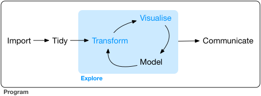

Visualisation
Data Exploration & Visualization
Data Exploration
Example Dataset ‘mpg’: fuel economy data of cars
how does the data look like?
mpg dataset
head(mpg)# A tibble: 6 × 11
manufacturer model displ year cyl trans drv cty hwy fl class
<chr> <chr> <dbl> <int> <int> <chr> <chr> <int> <int> <chr> <chr>
1 audi a4 1.8 1999 4 auto(l5) f 18 29 p compa…
2 audi a4 1.8 1999 4 manual(m5) f 21 29 p compa…
3 audi a4 2 2008 4 manual(m6) f 20 31 p compa…
4 audi a4 2 2008 4 auto(av) f 21 30 p compa…
5 audi a4 2.8 1999 6 auto(l5) f 16 26 p compa…
6 audi a4 2.8 1999 6 manual(m5) f 18 26 p compa…displ: engine displacement in litres
hwy: highway efficiency (miles per gallon)
mpg dataset
Also useful
summary(mpg)glimpse(mpg)view(mpg)dim(mpg)Data Visualization
Different options to create plots in R
- base R: ok, but sometimes well annoying
- plotly
- ggplot2: versatile. elegant. consistent. fun. wohooo!
Data Visualization in ggplot2
The grammar of graphics.

Visualization: Canvas
mpg %>%
ggplot()
Visualization: Axes
displ: engine volume hwy: fuel efficiency (miles per gallon)
mpg %>%
ggplot(aes(x = displ, y = hwy))
Visualization: Data
-> adding layers
mpg %>%
ggplot(aes(x = displ, y = hwy)) +
geom_point()
Visualization: Color Coding
mpg %>%
ggplot(aes(x = displ, y = hwy, color = manufacturer)) +
geom_point()
Visualization: Labels
mpg %>%
ggplot(aes(x = displ, y = hwy, color = manufacturer)) +
geom_point() +
labs(title = "Large displacement lowers fuel efficiency",
x = "Displacement", y = "Efficiency",
caption = "mgp data")Visualization: save plot
p <- mpg %>%
ggplot(aes(x = displ, y = hwy, color = manufacturer)) +
geom_point()
ggsave("displ_vs_hwy.png", plot = p)
- free choice of data format (.pdf, .png)
- numerous options to change size, scaling etc., see ?ggsave
- saves directly into working directory, unless specified differently (e.g. in subfolder)
Time to check it out..
Exercise Part 1.
pdf sheet on OLAT
ggplot: General template
ggplot(data = <DATA>) +
<GEOM_FUNCTION>(aes(<MAPPINGS>))to make a graph, we replace the bracketed sections with
- a dataset
- a geom function
- a collection of mappings/aestethics
mappings/aestethics
- color
- fill
- shape
- linetype
- size
- alpha

mappings/aestethics
Example: color and shape
ggplot(data = mpg) +
geom_point(aes(x = displ, y = hwy,
color = drv))
ggplot(data = mpg) +
geom_point(aes(x = displ, y = hwy,
shape = drv))
mappings/aestethics
automatic vs. manual setting of mappings
ggplot(data = mpg) +
geom_point(aes(x = displ, y = hwy,
color = drv))ggplot(data = mpg) +
geom_point(aes(x = displ, y = hwy),
color = "red")
geoms
geom_point(), geom_line(), geom_smooth(), … and tons of others!
ggplot(data = mpg) +
geom_point(aes(x = displ, y = hwy))
ggplot(data = mpg) +
geom_smooth(aes(x = displ, y = hwy))
Combine it!
ggplot(data = mpg) +
geom_point(aes(x = displ, y = hwy, color = drv)) +
geom_smooth(aes(x = displ, y = hwy))`geom_smooth()` using method = 'loess' and formula 'y ~ x'
Avoid Code Duplication
ggplot(data = mpg) +
geom_point(aes(x = displ, y = hwy)) +
geom_smooth(aes(x = displ, y = hwy))ggplot(data = mpg,
aes(x = displ, y = hwy)) +
geom_point() +
geom_smooth()Note the difference!
ggplot(data = mpg) +
geom_point(aes(x = displ, y = hwy,
color = drv)) +
geom_smooth(aes(x = displ, y = hwy))
ggplot(data = mpg,
aes(x = displ, y = hwy, color = drv)) +
geom_point() +
geom_smooth()
How can we fix it?
Solution: Individual aes() for different geoms
ggplot(data = mpg,
aes(x = displ, y = hwy, color = drv)) +
geom_point() +
geom_smooth()
ggplot(data = mpg,
aes(x = displ, y = hwy)) +
geom_point(aes(color = drv)) +
geom_smooth()
Individual aes() for different geoms
Different ways to achieve the same.
ggplot(data = mpg,
aes(x = displ, y = hwy)) +
geom_point(aes(color = drv)) +
geom_smooth()ggplot(data = mpg,
aes(x = displ, y = hwy, color = drv)) +
geom_point() +
geom_smooth(aes(group = 1))
Discrete vs. continuous variables
head(mpg)# A tibble: 6 × 11
manufacturer model displ year cyl trans drv cty hwy fl class
<chr> <chr> <dbl> <int> <int> <chr> <chr> <int> <int> <chr> <chr>
1 audi a4 1.8 1999 4 auto(l5) f 18 29 p compa…
2 audi a4 1.8 1999 4 manual(m5) f 21 29 p compa…
3 audi a4 2 2008 4 manual(m6) f 20 31 p compa…
4 audi a4 2 2008 4 auto(av) f 21 30 p compa…
5 audi a4 2.8 1999 6 auto(l5) f 16 26 p compa…
6 audi a4 2.8 1999 6 manual(m5) f 18 26 p compa…Discrete vs. continuous variables
ggplot(data = mpg,
aes(x = displ, y = hwy)) +
geom_point(aes(color = drv)) 
ggplot(data = mpg,
aes(x = displ, y = hwy, color = cty)) +
geom_point() 
Geoms with statistical transformation
- geom_smooth
- geom_bar
- geom_boxplot
- geom_density
- geom_violine
Example: geom_bar
ggplot(data = mpg) +
geom_bar(aes(x = class))
Count does not show up in the original data!
-> calculated by algorithm, the so-called stat
Example: geom_bar

Different geom have different default stat.
check ?geom_bar for details to each geom.
Example: geom_bar
- We can override the default stat.
- Example: proportion instead of absolute count
- look up the ‘computed variables’ in the help section
ggplot(data = mpg) +
geom_bar(aes(x = class, y = ..prop.., group = 1))
Boxplots & Violin-Plots
ggplot(data = mpg) +
geom_boxplot(aes(x = class, y = hwy,
fill = class))ggplot(data = mpg) +
geom_violin(aes(x = class, y = hwy,
fill = class))
Visualize distributions
ggplot(data = mpg) +
geom_density(aes(x = hwy, fill = drv), alpha = 0.5)
facets
facet_wrap
ggplot(data = mpg) +
geom_point(mapping = aes(x = displ, y = hwy)) +
facet_wrap(~ class, nrow = 2)
facets
facet_grid
ggplot(data = mpg) +
geom_point(mapping = aes(x = displ, y = hwy)) +
facet_grid(drv ~ cyl)
Variables for facet_wrap and facet_grid should be discrete!
Unhappy how it looks?
Many ways to customize your figures
- change general appearance: themes
- change color, linetypes, shapes, etc.: scales
- adjust axis labels, …
- …
Urgent Help: The ggplot cheatsheet
https://rstudio.com/wp-content/uploads/2015/03/ggplot2-cheatsheet.pdf

Useful Resources
Hands on
- http://www.cookbook-r.com/Graphs/
- https://ggplot2.tidyverse.org/
- Stackoverflow
- Twitter: #rstats
- https://www.springer.com/de/book/9783319242750: great book, but not for free :(
Theory
H. Wickham (2010): A layered grammar of graphics. Journal of Computational and Graphical Statistics, 19(1), pp 3-28.
https://vita.had.co.nz/papers/layered-grammar.html
Claus Wilke: Fundamentals of Data Visualization
https://clauswilke.com/dataviz/
Exercise Part 2
Assignment

Sepal.Length Sepal.Width Petal.Length Petal.Width Species
1 5.1 3.5 1.4 0.2 setosa
2 4.9 3.0 1.4 0.2 setosa
3 4.7 3.2 1.3 0.2 setosa
4 4.6 3.1 1.5 0.2 setosa
5 5.0 3.6 1.4 0.2 setosa
6 5.4 3.9 1.7 0.4 setosa
7 4.6 3.4 1.4 0.3 setosa
8 5.0 3.4 1.5 0.2 setosa
9 4.4 2.9 1.4 0.2 setosa
10 4.9 3.1 1.5 0.1 setosa
11 5.4 3.7 1.5 0.2 setosa
12 4.8 3.4 1.6 0.2 setosa
13 4.8 3.0 1.4 0.1 setosa
14 4.3 3.0 1.1 0.1 setosa
15 5.8 4.0 1.2 0.2 setosa
16 5.7 4.4 1.5 0.4 setosa
17 5.4 3.9 1.3 0.4 setosa
18 5.1 3.5 1.4 0.3 setosa
19 5.7 3.8 1.7 0.3 setosa
20 5.1 3.8 1.5 0.3 setosa
21 5.4 3.4 1.7 0.2 setosa
22 5.1 3.7 1.5 0.4 setosa
23 4.6 3.6 1.0 0.2 setosa
24 5.1 3.3 1.7 0.5 setosa
25 4.8 3.4 1.9 0.2 setosa
26 5.0 3.0 1.6 0.2 setosa
27 5.0 3.4 1.6 0.4 setosa
28 5.2 3.5 1.5 0.2 setosa
29 5.2 3.4 1.4 0.2 setosa
30 4.7 3.2 1.6 0.2 setosa
31 4.8 3.1 1.6 0.2 setosa
32 5.4 3.4 1.5 0.4 setosa
33 5.2 4.1 1.5 0.1 setosa
34 5.5 4.2 1.4 0.2 setosa
35 4.9 3.1 1.5 0.2 setosa
36 5.0 3.2 1.2 0.2 setosa
37 5.5 3.5 1.3 0.2 setosa
38 4.9 3.6 1.4 0.1 setosa
39 4.4 3.0 1.3 0.2 setosa
40 5.1 3.4 1.5 0.2 setosa
41 5.0 3.5 1.3 0.3 setosa
42 4.5 2.3 1.3 0.3 setosa
43 4.4 3.2 1.3 0.2 setosa
44 5.0 3.5 1.6 0.6 setosa
45 5.1 3.8 1.9 0.4 setosa
46 4.8 3.0 1.4 0.3 setosa
47 5.1 3.8 1.6 0.2 setosa
48 4.6 3.2 1.4 0.2 setosa
49 5.3 3.7 1.5 0.2 setosa
50 5.0 3.3 1.4 0.2 setosa
51 7.0 3.2 4.7 1.4 versicolor
52 6.4 3.2 4.5 1.5 versicolor
53 6.9 3.1 4.9 1.5 versicolor
54 5.5 2.3 4.0 1.3 versicolor
55 6.5 2.8 4.6 1.5 versicolor
56 5.7 2.8 4.5 1.3 versicolor
57 6.3 3.3 4.7 1.6 versicolor
58 4.9 2.4 3.3 1.0 versicolor
59 6.6 2.9 4.6 1.3 versicolor
60 5.2 2.7 3.9 1.4 versicolor
61 5.0 2.0 3.5 1.0 versicolor
62 5.9 3.0 4.2 1.5 versicolor
63 6.0 2.2 4.0 1.0 versicolor
64 6.1 2.9 4.7 1.4 versicolor
65 5.6 2.9 3.6 1.3 versicolor
66 6.7 3.1 4.4 1.4 versicolor
67 5.6 3.0 4.5 1.5 versicolor
68 5.8 2.7 4.1 1.0 versicolor
69 6.2 2.2 4.5 1.5 versicolor
70 5.6 2.5 3.9 1.1 versicolor
71 5.9 3.2 4.8 1.8 versicolor
72 6.1 2.8 4.0 1.3 versicolor
73 6.3 2.5 4.9 1.5 versicolor
74 6.1 2.8 4.7 1.2 versicolor
75 6.4 2.9 4.3 1.3 versicolor
76 6.6 3.0 4.4 1.4 versicolor
77 6.8 2.8 4.8 1.4 versicolor
78 6.7 3.0 5.0 1.7 versicolor
79 6.0 2.9 4.5 1.5 versicolor
80 5.7 2.6 3.5 1.0 versicolor
81 5.5 2.4 3.8 1.1 versicolor
82 5.5 2.4 3.7 1.0 versicolor
83 5.8 2.7 3.9 1.2 versicolor
84 6.0 2.7 5.1 1.6 versicolor
85 5.4 3.0 4.5 1.5 versicolor
86 6.0 3.4 4.5 1.6 versicolor
87 6.7 3.1 4.7 1.5 versicolor
88 6.3 2.3 4.4 1.3 versicolor
89 5.6 3.0 4.1 1.3 versicolor
90 5.5 2.5 4.0 1.3 versicolor
91 5.5 2.6 4.4 1.2 versicolor
92 6.1 3.0 4.6 1.4 versicolor
93 5.8 2.6 4.0 1.2 versicolor
94 5.0 2.3 3.3 1.0 versicolor
95 5.6 2.7 4.2 1.3 versicolor
96 5.7 3.0 4.2 1.2 versicolor
97 5.7 2.9 4.2 1.3 versicolor
98 6.2 2.9 4.3 1.3 versicolor
99 5.1 2.5 3.0 1.1 versicolor
100 5.7 2.8 4.1 1.3 versicolor
101 6.3 3.3 6.0 2.5 virginica
102 5.8 2.7 5.1 1.9 virginica
103 7.1 3.0 5.9 2.1 virginica
104 6.3 2.9 5.6 1.8 virginica
105 6.5 3.0 5.8 2.2 virginica
106 7.6 3.0 6.6 2.1 virginica
107 4.9 2.5 4.5 1.7 virginica
108 7.3 2.9 6.3 1.8 virginica
109 6.7 2.5 5.8 1.8 virginica
110 7.2 3.6 6.1 2.5 virginica
111 6.5 3.2 5.1 2.0 virginica
112 6.4 2.7 5.3 1.9 virginica
113 6.8 3.0 5.5 2.1 virginica
114 5.7 2.5 5.0 2.0 virginica
115 5.8 2.8 5.1 2.4 virginica
116 6.4 3.2 5.3 2.3 virginica
117 6.5 3.0 5.5 1.8 virginica
118 7.7 3.8 6.7 2.2 virginica
119 7.7 2.6 6.9 2.3 virginica
120 6.0 2.2 5.0 1.5 virginica
121 6.9 3.2 5.7 2.3 virginica
122 5.6 2.8 4.9 2.0 virginica
123 7.7 2.8 6.7 2.0 virginica
124 6.3 2.7 4.9 1.8 virginica
125 6.7 3.3 5.7 2.1 virginica
126 7.2 3.2 6.0 1.8 virginica
127 6.2 2.8 4.8 1.8 virginica
128 6.1 3.0 4.9 1.8 virginica
129 6.4 2.8 5.6 2.1 virginica
130 7.2 3.0 5.8 1.6 virginica
131 7.4 2.8 6.1 1.9 virginica
132 7.9 3.8 6.4 2.0 virginica
133 6.4 2.8 5.6 2.2 virginica
134 6.3 2.8 5.1 1.5 virginica
135 6.1 2.6 5.6 1.4 virginica
136 7.7 3.0 6.1 2.3 virginica
137 6.3 3.4 5.6 2.4 virginica
138 6.4 3.1 5.5 1.8 virginica
139 6.0 3.0 4.8 1.8 virginica
140 6.9 3.1 5.4 2.1 virginica
141 6.7 3.1 5.6 2.4 virginica
142 6.9 3.1 5.1 2.3 virginica
143 5.8 2.7 5.1 1.9 virginica
144 6.8 3.2 5.9 2.3 virginica
145 6.7 3.3 5.7 2.5 virginica
146 6.7 3.0 5.2 2.3 virginica
147 6.3 2.5 5.0 1.9 virginica
148 6.5 3.0 5.2 2.0 virginica
149 6.2 3.4 5.4 2.3 virginica
150 5.9 3.0 5.1 1.8 virginica